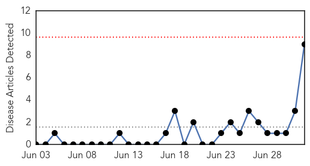
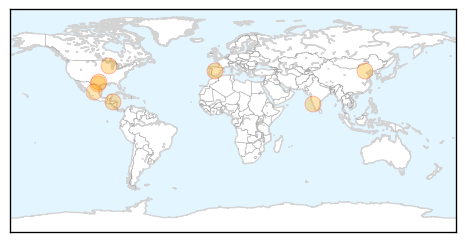
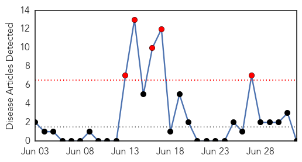

Swine Flu
30-Day Web Trend
0 alerts, 0 warnings

30-Day Twitter Trend
4 alerts, 0 warnings

Article Locations
Article Confidences
Top Articles:
- 0.999
- Scientist's superflu 'puts millions at risk'
- 0.989
- Scientist recreates H1N1 flu virus RESISTANT to vaccine
- 0.989
- ‘Humdinger’: Swine flu virus which killed half-million modified to 'incurable' — RT News
- 0.961
- Two More Swine Flu Cases Confirmed Among Minor Detainees Infowars Alex Jones' Infowars: There's a war on for your mind!
- 0.954
- How Fox News and Drudge Push The Mexican 'Germ Invasion' Myth
- 0.924
- Seven die of swine flu in Udupi
- 0.887
- At Least Two ‘Border Kids’ Have Swine Flu
- 0.851
- Flu fears fuel immigration wars
- 0.782
- Yoshihiro Kawaokare develops deadly H1N1 flu – but now it can escape the human immune system
Top Tweets:
-
No tweets found for Jul 02, 2014
Pertussis
30-Day Web Trend
5 alerts, 0 warnings

30-Day Twitter Trend
0 alerts, 0 warnings

Article Locations

Article Confidences

Top Articles:
-
No articles found for Jul 02, 2014
Top Tweets:
-
No tweets found for Jul 02, 2014